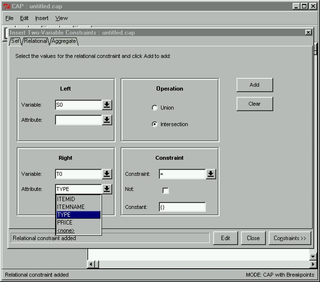

 |
Two-Variable ConstraintsAfter we have created constraints for the antecedent and the consequent, we can proceed to create constraints between the antecedent and the consequent. The "Insert Two-Variable Constraints" window can be opened by clicking on the Two-Variable Constraints button in the main window. Here we are creating the two-variable relational constraint that the TYPES in the antecedent are disjoint from the types of items in the consequent. This constraint is created to reduce redundancy in candidate set output, since we are not interested in candidate pairs such as {snacks, soda}->{1, 2, 5} where items 1 and 2 are snacks, and item 5 is a soda.
|